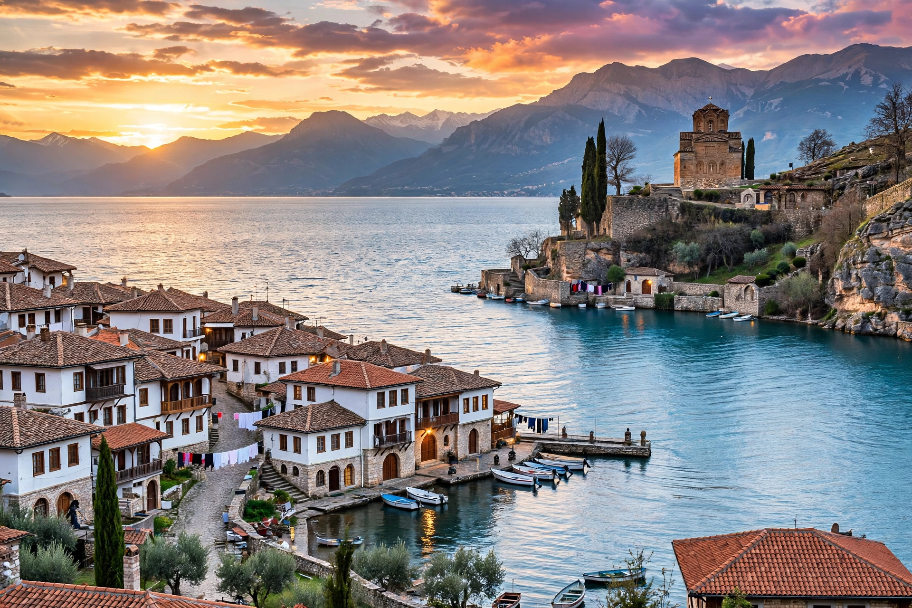

Ohrid (Macedonian: Охрид) is a city in North Macedonia, on the eastern shore of Lake Ohrid, and the seat of Ohrid Municipality. With about 38,000–42,000 inhabitants, it is known for its ancient churches, amphitheatre, and well-preserved old town. Ohrid and Lake Ohrid are a UNESCO World Heritage Site, recognised in 1979–1980 for natural and cultural heritage.

| Country | North Macedonia |
|---|---|
| Region | Southwestern |
| Municipality | Ohrid |
| Elevation | 695 m |
| Population | ~38,818 (2021) |
The area was settled in antiquity as Lychnidos, a town of the Dassaretii, later under Philip II of Macedon and Rome on the Via Egnatia. In Slavic tradition Ohrid became a centre of learning associated with Saints Clement and Naum, disciples of Cyril and Methodius, who founded schools and a university in the late 9th–10th centuries. It was briefly capital of the empire of Samuel of Bulgaria around 1000. Under Byzantine and then Ottoman rule (from c. 1395 to 1912) it remained a church centre. The Archbishopric of Ohrid was abolished in 1767.
Landmarks include the Church of St. Sophia, the Church of St John at Kaneo overlooking the lake, Samuel's Fortress, the Ancient Theatre, and Plaošnik. Tradition claims Ohrid once had 365 churches, one for each day of the year.
Lake Ohrid, shared with Albania, is one of Europe's oldest and deepest lakes, renowned for endemic species. See also North Macedonia and Lake Ohrid.
The Ohrid Summer Festival (since 1961) hosts music and theatre. The city is a major tourist destination in the Balkans.